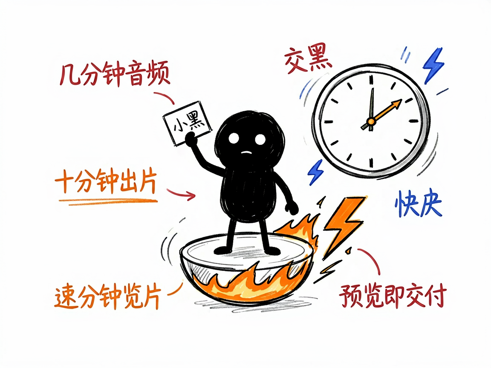

有一段播客音频，想快速变成竖屏短视频？它帮你秒出字幕版 —— podcast-shorts-remotion 介绍
你录了一期播客，或者攒了一段口播，觉得内容不错想发短视频平台，但一想到要加字幕、配章节、调颜色、渲染导出，就懒得动了。其实这活儿可以非常快。
podcast-shorts-remotion 就是来解决这件事的。
你给它一段音频（最好再给个逐字稿），它还你一条 1080×1920 的竖屏短视频，带字幕、章节标签、进度条和主题配色。

它到底能做什么
- 把音频当作时间轴唯一基准，自动转写（Whisper，一种语音识别）出字幕，并帮你校正识别错误。
- 按内容切成章节，顶部有进度条，底部有居中字幕，关键词高亮，像刷知识类短视频那样。
- 围绕主题自动配一套配色（红金、翠绿、靛蓝等几套现成方案挑），不用你自己调。
- 主打一个"快"：并行转写、一次写对、跳过冗余检查，直接出预览片，几分钟音频约十分钟量级渲染完。
- 预览片（540×960 半高清）就是默认交付物，确认满意再决定是否要 1080p 高清版。

怎么用
你不需要记任何命令。在 codex / workbuddy 等 agent 装好 podcast-shorts-remotion 技能后，直接对 AI 说话就行：
场景 1：把播客变成短视频 你：我录了一期 20 分钟的播客，帮我剪一条带字幕的竖屏短视频发出去。 AI：它会自动转写音频、按内容切章节、加上居中字幕和顶部进度条，再配一套合适的主题配色，给你一条 1080×1920 的竖屏短片。
场景 2：口播也能用 你：我有一段口播录音，想快速出字幕版视频，越省事越好。 AI：它会以音频为基准转写并校正字幕，关键词高亮，直接出预览片，你确认满意后再要高清版。
场景 3：赶时间 你：我这音频就 5 分钟，想尽快拿到能发的版本。 AI：它主打一个"快"，会并行处理、跳过冗余检查，几分钟音频大约十分钟量级就能渲染出预览片，你确认就能发。
谁适合用
- 播客主、口播博主，想把手头音频快速变成可发的短视频。
- 做知识分享、行业解读，需要稳定出字幕版竖屏视频的人。
- 追求效率、不想在渲染校验上耗时间的内容生产者。
一点说明
它是跑在 AI 助手里的技能，不是独立 App。渲染靠本机浏览器环境，长音频会比较吃时间（这是硬件地板，不是卡住）。它产出的是一段 Remotion（一个用代码做视频的开源框架，但你不用写，AI 帮你写）视频。具体能力以项目文档为准。